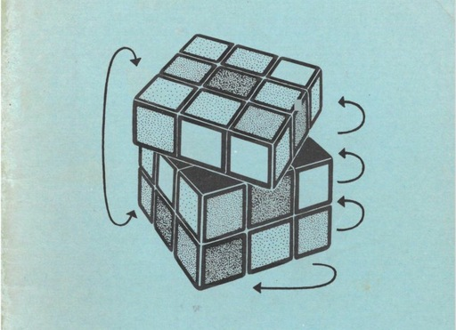
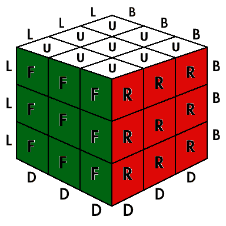
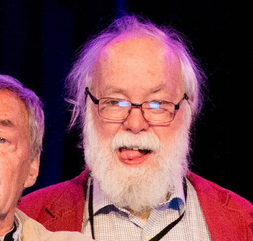

Father of cubing theory, notation, and layer-by-layer
We lost the legendary David Singmaster in February 2023. As a self-described "metagrobologist", he studied and catalogued many puzzles in his life. Singmaster was instrumental in early cubing, publishing:

Notes On Rubik's 'Magic Cube'
(1979), where he defined the face
names for 3x3x3 moves and pieces that form the basis of modern puzzle
terminology
and notation.

A
Step by Step Solution of Rubik's "Magic Cube" (1980), the oldest known publication of a layer-based method
starting with cross.

The Cubic Circular (1981-1985), where he reported on early speedcubing competitions and the first World Championship, extensive cube math, God's algorithm, new puzzles, and more.
Singmaster was active and jovial into his 80's, traveling, making friends, and writing about puzzles. He was a "judge" on the jury panel in the 1982 World Champiohship, and also competed officially in 2012. It's easy to take our modern speedcubing community for granted, but he effectively maintained one the first international cubing communities and it's likely that we wouldn't be quite the same without him.

A silly picture of David Singmaster sticking out his tongue (standing next to Ernő Rubik).


{kind=link}
{kind=link}